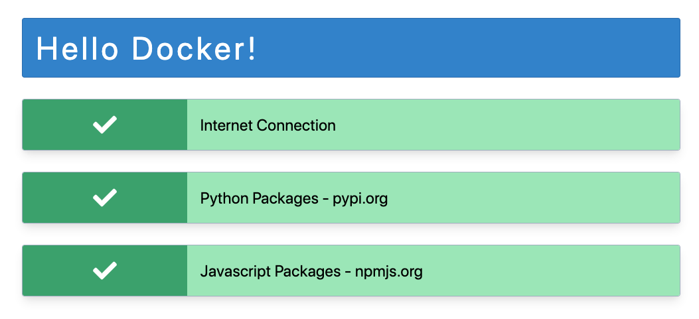
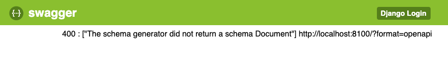
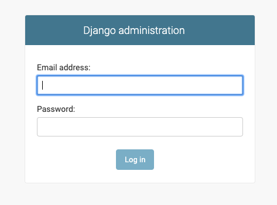

Simpl Bootcamp
Developing Simpl Applications
Tech Setup
- Docker
- Code Editor
- Git
- simpl-games-api service
Docker
What is it and why is it useful
Verifying Your Docker Setup
Run this locally in a termainl
docker run -p "80:80" frankwiles/hello-docker:latest
And then browse to http://localhost/
You should see this
Code Editor
You're going to need one
- VS Code
- Sublime Text 2
- vi / emacs / etc
Git
Git Resources
- Cheatsheet - https://education.github.com/git-cheat-sheet-education.pdf
- Github Desktop Client (optional) - https://desktop.github.com
High Level Overview
Main Communication Steps
- User's browser loads game from UI service
- User logins via UI service which checks the authentication against the user info in API
- Once authenticated, User's browser makes websocket connection to Model service
- Browser loads all needed game data over websocket
- From here on all communication is over websocket to Model service

WAMP
- Web
- Application
- Message
- Protocol
WAMP
WAMP defines a lightweight protocol for doing RPC and pubsub over websockets
WAMP Router
When using WAMP you need a WAMP router. Simpl uses crossbar for this.
A WAMP router is responsible for terminating the websocket connections, authentication, authorization, and routing messages and calls
Simpl & WAMP
What we call a model or modelservice in Simpl is both a crossbar WAMP router and a asyncio Python process which registers itself with the router to answer WAMP calls from the UI.
Setup simpl-games-api
This API is the data storage for Simpl
- Users
- Games
- Relationship of User to Worlds and Runs
- Decisions and Results
- Multiple Simpl games can share the same API service
Clone Repo and Get Started
$ git clone https://github.com/simplworld/simpl-games-api.git
$ cd simpl-games-api
$ git checkout -b simpl-bootcamp origin/simpl-bootcamp
$ docker-compose up
NOTE: Do not rename the checkout, it must be named simpl-games-api
Check the setup
Browse to http://localhost:8100/
You should see a page like
Create Superuser
(your terminal)$ docker-compose run --rm api bash
(container termainl)$ python3 manage.py createsuperuser
This creates a temporary container off our image and gives you a Linux shell in it. Enter email address and password when prompted.
This user is your admin account to the Simpl Games API
Login to API Admin
Browse to http://localhost:8100/admin/
Django Admin
Login with the email and password you used to create your superuser
Setup Our Game
- Create a Game named Blackjack with slug blackjack
- Create a Run for Blackjack named default
- Create a Phase named Play for Run we just created
Blackjack User Interface
ReactJS
https://reactjs.org
Released as Open Source by Facebook in 2013
React
- Declarative UI
- Reusable Components
- One way data flow
- Modern Javascript (ES6+)
Old School vs New React
Old School Example
React JSX Example
code_examples/react1.js
WAIT A SECOND!!!
Didn't PHP and the like teach us that mixing code and presentation is a bad idea?
JSX - Somehow it works!
- Presentation elements are defined along with data/actions
- Data/actions passed down component heirarchy
- Small reusable components that build up to a larger whole
Quick Primer on Old JavaScript (ES5) to New Javascript (ES6/ES7+)
Old Javascript
function add(x, y) {
return x + y;
}
New Javascript - Arrow Functions
const add = (x, y) => {
return x + y;
}
Old Javascript
var MyObject = {foo: 1, bar: 2};
var foo = MyObject.foo;
var bar = MyObject.bar;
New Javascript
let MyObject = {foo: 1, bar: 2};
let { foo, bar } = MyObject;
'let' creates a block scoped variable.
Old Javascript
var someModule = require(./SomeModule);
New Javascript
import someModule from './someModule';
Old Javascript
const first = "Frank";
const last = "Wiles
const myName = "FullName: " + a + " " + b;
New Javascript
const myText = `FullName: ${a} ${b}`;
Webpack and Babel
Babel
- Babel transpiles ES6/ES7 to ES5 for the browser to understand
- Compiles JSX to Javascript
Webpack
- Javascript bundler
- Watches for what and when to run Babel
- How/Where to compile CSS
- Process images
- Move files around
- etc
Component Heirarchy
Keeps Things Sane
React App Example
code_examples/react2.js
Redux
One way data flow pattern used by React
Redux Explained
- One global store per app
- Actions indicate what happened and any associated data
- Reducers, usually broken up by type of data, included app or feature look for actions and make changes to the store
Store Example
{
items: ["coffee", "tea", "espresso"],
user: {
email: null,
loggedIn: false
}
}
Action Examples
{ type: "ADD_ITEM", data: "danish" }
{ type: "SET_USER", email: "frank@revsys.com" }
{ type: "LOGIN_USER", sessionId: "lfyBnPmRzbUQims" }
Reducer Example - Items
function items(state = [], action) {
switch (action.type) {
case 'ADD_ITEM':
return [...state, action.data]
default:
return state
}
}
Reducer Example - User
function user(state = {email: null, loggedIn: false}, action) {
switch (action.type) {
case 'SET_USER':
return {...state, email: action.email}
case 'LOGIN_USER':
return {...state, loggedIn: true}
default:
return state
}
}
Setup simpl-blackjack-ui
git clone https://github.com/simplworld/simpl-blackjack-ui.git
$ cd simpl-blackjack-ui
$ docker-compose up
NOTE: Do not rename the checkout, it must be named simpl-games-ui
UI Configuration
environment:
- DJANGO_SETTINGS_MODULE=blackjack_ui.settings
- MODEL_SERVICE_WS=ws://localhost:8080/ws
- SIMPL_GAMES_URL=http://api:8000/apis/
Dive into React App
Django Routing
urlpatterns = [
url(r"^api/", include(("users.urls", "users_api"))),
url(r"^admin/", admin.site.urls),
re_path(
r"^static/(?P.*)$",
serve,
kwargs={
"document_root": settings.STATIC_ROOT,
"show_indexes": True
},
),
url(r"^.*$", TemplateView.as_view(
template_name="core/index.html"
)),
]
Django Routing
urlpatterns = [
url(r"^api/", include(("users.urls", "users_api"))),
url(r"^admin/", admin.site.urls),
re_path(
r"^static/(?P.*)$",
serve,
kwargs={
"document_root": settings.STATIC_ROOT,
"show_indexes": True
},
),
url(r"^.*$", TemplateView.as_view(
template_name="core/index.html"
)),
]
Django's routing loads this template for any path not defined above
Index Template
{% load render_bundle from webpack_loader %}
<html>
<head>
Wharton Blackjack
{% render_bundle 'main' 'css' %}
</head>
<body>
{% render_bundle 'main' 'js' %}
</body>
</html>
django-webpack-loader knows what these bundles are and what URL to load them from.
Note the div
{% load render_bundle from webpack_loader %}
<html>
<head>
Wharton Blackjack
{% render_bundle 'main' 'css' %}
</head>
<body>
{% render_bundle 'main' 'js' %}
</body>
</html>
React entrace point
import React from 'react';
import ReactDOM from 'react-dom';
import { Provider } from 'react-redux';
import store from './store/store';
import App from './app';
import '../scss/main.scss';
ReactDOM.render(
,
document.getElementById('app')
);
Setup simpl-blackjack-model
git clone https://github.com/simplworld/simpl-blackjack-model.git
$ cd simpl-blackjack-model
$ docker-compose up
NOTE: Do not rename the checkout, it must be named simpl-games-model
Model Configuration
environment:
- DJANGO_SETTINGS_MODULE=blackjack_model.settings
- SIMPL_GAMES_URL=http://api:8000/apis/
- CALLBACK_URL=http://model.backend:8080/callback